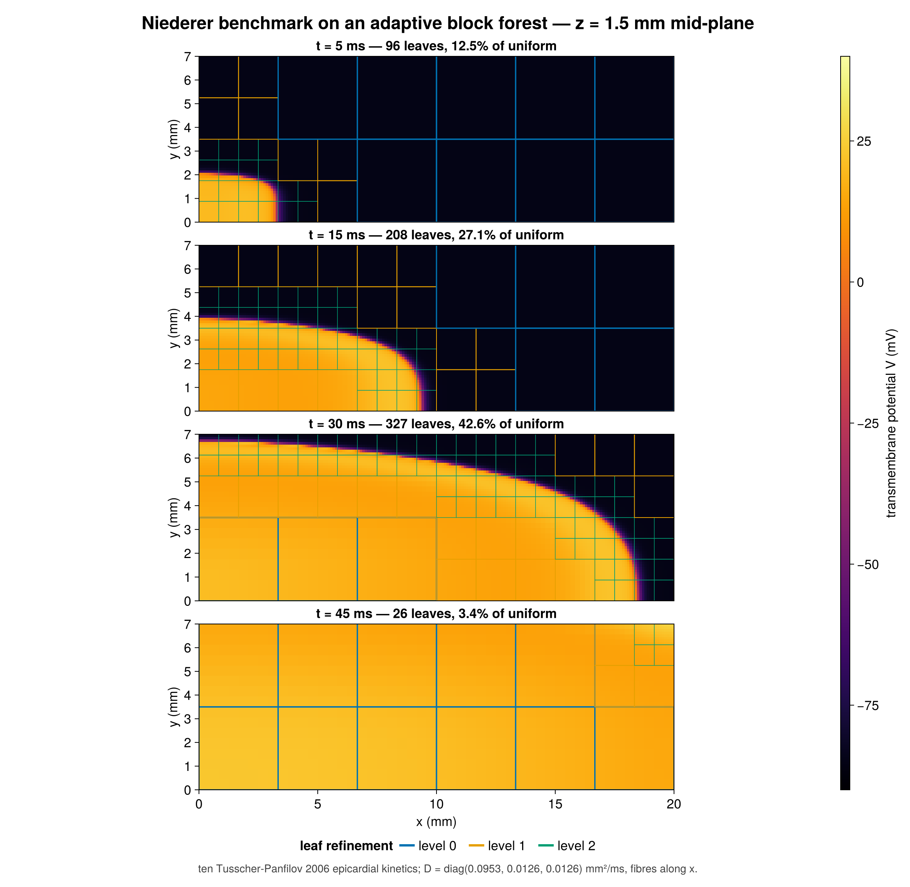
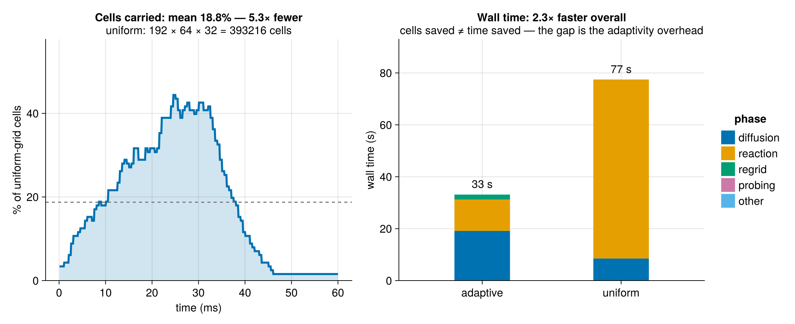
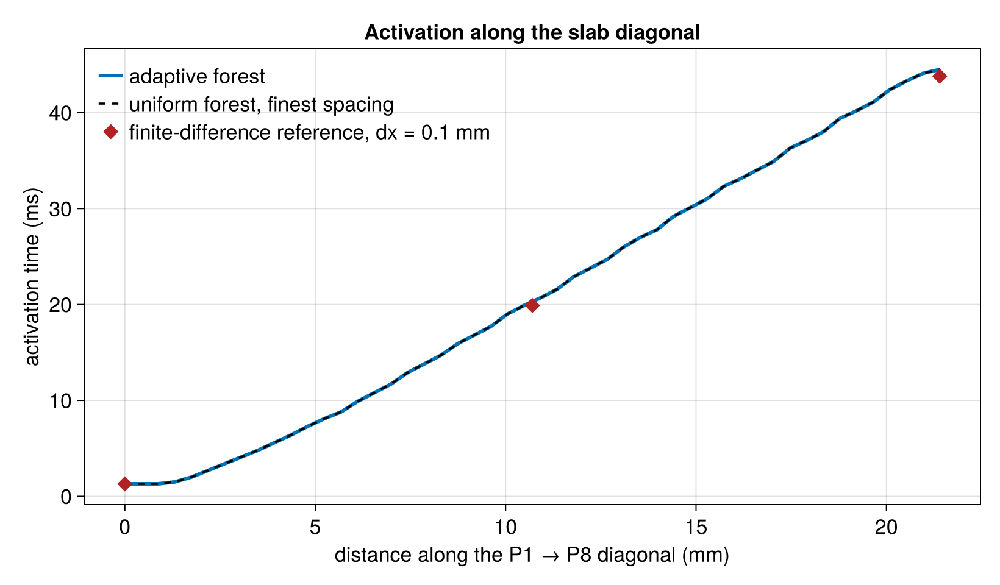

Niederer Benchmark
The Adaptive Mesh Refinement page argues that a forest should track a moving feature and coarsen behind it. This page is the quantitative check on that claim: the standard N-version cardiac tissue benchmark, run on an adaptive BlockForest, scored against both an independent code and an equal-resolution uniform run, and timed phase by phase so the cost of adaptivity is visible rather than inferred.
Source: examples/niederer_benchmark.jl and examples/ten_tusscher_2006.jl.
The benchmark
Niederer et al. (2011) proposed a monodomain problem precise enough that eleven independent simulators could be compared on it, and it has been the standard verification case for cardiac tissue solvers since. A 20 × 7 × 3 mm slab of ventricular myocardium with fibres along the long axis is stimulated in a 1.5 mm cube at one corner; the reported quantity is activation time — the first upward crossing of 0 mV — at nine fixed points, the eight corners plus the centre.
The point of the benchmark is that activation time is a stringent, discretization- sensitive scalar. Conduction velocity depends on how well the upstroke is resolved, so a mesh that is too coarse activates measurably late. That is exactly what makes it a good test of an adaptive scheme: if refinement fails to track the wavefront even briefly, the front slows and the error shows up in every downstream point.
Setup
The monodomain equation coupled to ten Tusscher–Panfilov (2006) epicardial kinetics:
∂V/∂t = ∇·(D∇V) − I_ion(V, s) + I_stim/(βCm), ∂s/∂t = f(V, s)with 18 gating and concentration states per cell. Conductivities are combined harmonically into the monodomain tensor D = diag(D_L, D_T, D_T), giving D_L = 0.0953 and D_T = 0.0126 mm²/ms — a 7.6:1 anisotropy that makes the wave travel roughly 2.7× faster along the fibres than across them. All six faces are zero-flux.
Time stepping is Godunov (Lie–Trotter) splitting — diffusion, then reaction — with forward Euler on both halves at dt = 0.01 ms. Explicit diffusion is comfortable here: at the finest spacing the operator’s largest eigenvalue is about 45, so the stability bound is dt < 0.044 ms and the ionic upstroke, not diffusion, is what pins the step. That matters, because an implicit solve on an adapted forest currently has no preconditioner available — operator_diagonal rejects Interface faces and multigrid rejects a BlockForest outright — so it would mean unpreconditioned GMRES every step.
Both time integration and the cell model are example code, not package code. MatrixFreeOperators deliberately owns neither.
Anisotropy without a tensor operator
The package has no tensor-valued coefficient: scaling and diffusion accept scalar coefficients only, and there is no tensor DivGrad leaf. It does not need one here. The fibres lie along x, so D is constant and axis-aligned, and the identity
∇·(D∇V) = D_L ∂ₓₓ + D_T ∂yy + D_T ∂zz = D_T ∇² + (D_L − D_T) ∂ₓₓturns the whole operator into two existing leaves:
diffusion_operator(g) = D_T * laplacian(g) + (D_L - D_T) * derivative(g, 1; order=2)This is exact, not an approximation, and it stays entirely inside the adjoint-tested API. Both operands are stencil leaves that declare shares_exchange, so the Added fills the halos once and runs both sweeps on that one exchange: the sum costs a single inter-block halo exchange per step, the same as a bare laplacian, rather than one per operand.
Zero-flux boundaries are just Neumann() on all six faces: for axis-aligned diagonal D, n·D∇V = 0 reduces to ∂V/∂n = 0, which is precisely what the symmetric-mirror ghost fill applies. Zero flux also means boundary_rhs vanishes, so there is no inhomogeneous term to fold in anywhere.
Carrying 18 states through a regrid
regrid! takes every live field in one atomic call, so the cell states have to be fields too. Rather than eighteen scalar BlockFields, the example uses one field whose element type is an SVector{18}:
psize = bf.blocksize .+ 2 .* bf.halo
S = BlockField([zeros(SVector{18,Float64}, psize...) for _ in 1:nleaves(bf)], bf)
...
η, V, S = regrid!(η, V, S; refine = ..., coarsen = ...)The transfer machinery is element-type generic — prolongation and averaging are linear combinations — so this rides through refinement and coarsening unchanged. It also makes the reaction step a pure function over one stack-allocated value per cell instead of eighteen strided array accesses.
One consequence is worth knowing: prolongation uses one-sided (5/4, −1/4) weights at parent-block edges, so a cell created by refinement can inherit a gating variable marginally outside [0,1]. The kernel clamps gates on read, which it must do for explicit stepping anyway.
Where AMR pays
Refinement follows |∇V| with absolute thresholds in mV/mm rather than fractions of the running peak. Because V is in physical millivolts, the front is unambiguous — roughly 200 mV/mm across the upstroke, against ~0 both at rest and in the plateau. The relative thresholds used by the 2D example need a zero guard at t = 0, when the slab is uniformly at rest, and degenerate once the whole domain has depolarized; absolute thresholds have neither failure mode.

The cell count follows the area of the wavefront rather than the volume of the slab: it climbs while the front grows toward the widest cross-section, then collapses once the slab has fully activated and there is nothing left to resolve. Averaged over the run the forest carries 18.8% of the cells a uniform grid at the same finest spacing would — 5.3× fewer.
That saving is real but not spectacular, and the reason is geometric rather than algorithmic: the slab is thin, so a quasi-planar front spanning 7 × 3 mm is a large fraction of a 20 mm sweep. AMR pays far better when the feature is small relative to the domain. Reporting the honest number matters more than picking a flattering geometry.
What adaptivity costs
Cells saved is not time saved, so the benchmark times both runs and splits the wall clock by phase. The gap between the two ratios is the whole story.

| phase | adaptive | uniform | speedup |
|---|---|---|---|
| diffusion | 19.1 s | 8.5 s | 0.44× |
| reaction | 12.1 s | 68.9 s | 5.70× |
| regrid | 1.9 s | — | — |
| total | 33.2 s | 77.5 s | 2.34× |
5.3× fewer cell-updates divided by 2.3× higher cost per update is the 2.3× net speedup — 75 ns per cell-update on the adaptive forest against 33 ns on the uniform one. Slightly more than half the cell saving is given back.
The reaction term behaves exactly as hoped. It is pointwise, so it scales with the cell count and comes in at 5.7× — marginally better than the cell ratio, since the smaller working set is kinder to cache. Regridding is also cheap: 120 regrids, each marking, editing the topology, transferring both fields and rebuilding the exchange schedule, total 1.9 s, under 6% of the run. The overhead is not where one might reflexively look.
It is in diffusion, which takes 19.1 s against the uniform run’s 8.5 s — 2.2× slower on 5.3× fewer cells. Timing the pieces on a representative adapted forest locates it precisely:
| adapted, 166 leaves | uniform, 768 leaves | |
|---|---|---|
halo_update! |
0.94 ms | 0.22 ms |
one laplacian apply |
1.01 ms | 0.53 ms |
| the anisotropic apply | 2.06 ms | 1.07 ms |
| exchange share of the apply | 92% | 45% |
On an adapted forest the halo exchange is the operator. Ghost-filling is 92% of an apply, because every coarse–fine face runs the Martin–Cartwright quadratic interpolation and the flux-matching restriction rather than a slab copy — roughly 20× the per-leaf cost of a same-level exchange.
When this table was measured, the example paid that exchange twice: D_T ∇² + (D_L − D_T) ∂ₓₓ is an Added, and each operand then ran its own full forest action, exchange included. It no longer does. An Added whose operands all shares_exchange — every stencil leaf does — fills the halos once and sweeps each operand on that one exchange, so the anisotropic apply now costs one exchange, the same as a bare laplacian. The phase table above predates that change (issue #85) and has not been re-measured; the projected saving was roughly 9 s off the adaptive run, lifting the overall speedup from 2.3× to about 3.2×. Fusing the two leaves into a single custom operator — the escape hatch DESIGN.md §4a exists for — would still save the second stencil sweep, but that is a far smaller share of an adapted apply than the exchange was.
Results
Nine activation times, against a structured finite-difference solve of the same problem at dx = 0.1 mm from an independent code (RadialBasisFunctions.jl):
| P1 | P2 | P3 | P4 | P5 | P6 | P7 | P8 | P9 | |
|---|---|---|---|---|---|---|---|---|---|
| adaptive forest (ms) | 1.3 | 30.8 | 43.6 | 32.1 | 9.2 | 32.3 | 33.3 | 44.5 | 20.0 |
| finite difference (ms) | 1.3 | 30.1 | 42.9 | 31.9 | 9.1 | 31.5 | 33.0 | 43.8 | 19.9 |
| Δ | +0.0 | +0.7 | +0.7 | +0.2 | +0.1 | +0.8 | +0.3 | +0.7 | +0.1 |
Mean |Δ| is 0.40 ms and the worst point is 0.80 ms, against a reference itself quantized to the 0.1 ms sampling interval. The deltas are uniformly non-negative, which is the expected signature of very slightly coarser effective resolution.
The sharper test is against an equal-resolution uniform run — the same solver on a forest with refinement disabled at the finest spacing, which holds the forest machinery fixed and isolates exactly what adaptivity adds:

All nine points agree to 0.00 ms, at 2.3× less wall time and 5.3× fewer cells on average. Adaptivity here is not a trade of accuracy for speed — at this tolerance it is free. The result is also insensitive to the thresholds: sweeping the refine threshold over 20–100 mV/mm and the coarsen threshold over 5–40 leaves all nine activation times bit-identical, because refinement is block-granular and any threshold in that range flags the same blocks.
Status
The activation-time metric is verified two independent ways, and the ionic model carries its own single-cell check (resting and peak potential, upstroke velocity, APD90, the calcium transient amplitude, and SR load stability) that runs standalone:
julia --project=examples examples/ten_tusscher_2006.jlTwo limitations are deliberate and should not be read past.
The plateau and repolarization are not resolved. Coarsening behind the front is exactly what makes AMR pay, and activation time is insensitive to it, but that means the late-time field is not a converged action potential. A study of repolarization gradients or alternans would need a different refinement indicator — one keyed on the recovery variables rather than |∇V|.
This is the first 3D BlockForest in the repository. The coarse–fine ghost fill, flux-matching restriction, balance cascade and regrid transfer are written generically over dimension but had never been exercised in 3D before this example. The exact agreement with the uniform run is currently the strongest evidence those paths are correct; dedicated 3D unit tests would be better and remain outstanding.